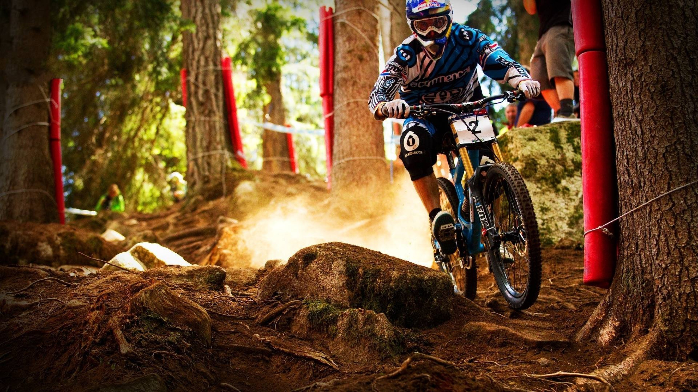
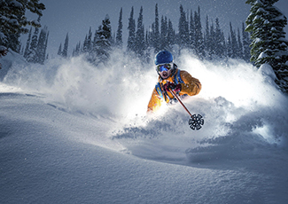
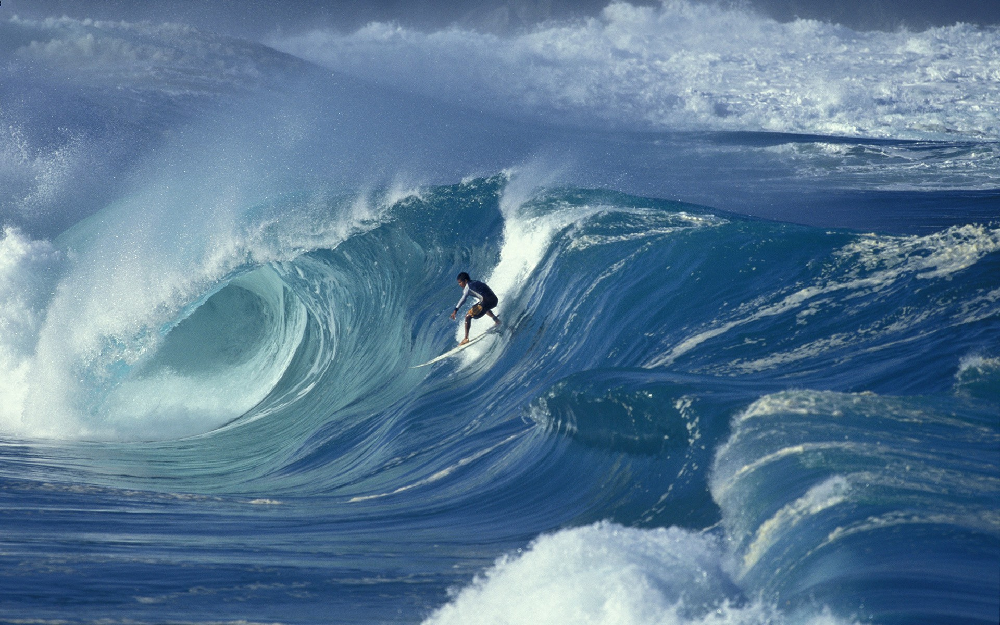

- 挑战自己的极限 不断扩展自己的能力 / Challenge your limits, expand your abilities.
- 滑翔伞是一项不需要许多体力付出的体育运动，全套器材仅重约20公斤。该飞行器是自由飞行器，通常从高山斜坡起飞，也可以通过牵引方式起飞。滑翔伞用双脚起
- 飞和着陆所使用的器材与飞机跳伞使用的降落伞有很大区别。当代的滑翔伞可以爬升到海拔4000米以 上，最大直线飞行距离400公里以上。出于飞行理念的不同，滑
- 翔伞可以分为休闲滑翔、竞技滑翔和特技滑翔三个领域。
- 极限，除了理想还剩下些什么，行动 / There's nothing left except the ideal, action
- 极限运动 是由多项成型运动项目以及游戏、生活和工作中的各种动作演变来，参与人群以年轻人为主的高难度观赏性体育运动。人类在与自然的融合过程中，借助
- 于现代高科技手段，最大限度地发挥自我身心潜能，向自身挑战的娱乐体育运动。它除了追求竞技体育超越自我生理极限“更高、更快、更强”的精神外，更强调参
- 与娱乐和勇敢精神追求在跨越心理障碍时所获得的愉悦感和成就感同时，它还体现了人类返璞归真、回归自然、保护环境的美好愿望因此已被世界各国誉为“未来体
- 育运动”。
- 极限运动的项目许多都是近几十年刚诞生的、方兴未艾的体育项目，根据季节可分为夏季和冬季两大类，运动领域涉及“海、陆、空”多维空间。
- 夏季极限运动主要比赛和表演项目有：BMX、滑板、难度攀岩、速度攀岩、空中滑板、高山滑翔、滑水、激流皮划艇、摩托艇、冲浪、水上摩托、蹦极跳、轮滑的
- U 台跳跃赛和街区障碍赛、100米和200米等运动项目。 由于极限运动有其“融入自然（自然、环境、生态、健康）、挑战自我（积极、勇敢、愉悦、刺激）”的
- “天人合一”的特性，使得极限运动在欧美各国的风靡程度简直可以用疯狂、魔力来形容。以滑水和滑板为例，仅在美国，滑水爱好者就有110万之名，职业滑水
- 队、表演队更是星罗棋布， “大餐”；而滑板运动的发烧友更是多达450万之众。 由于滑板运动太过惊险、刺激，在20世纪60年代，滑板运动曾受到有关国家政
- 府严令禁止，一度沦为“地下项目”，一直到80年代中期，滑板项目才重见天日，使这项“都市魔幻”卷土重来，其声势之在、影响之广 ，以致于成为许多精明
- 厂商眼中的“印钞机”。滑板天皇巨星托尼·霍克（Tony Hawker）和安迪·麦克唐纳（Andy Mcdonald ）在许多年轻人眼中无疑是和乔丹（篮球）、 皮特·桑普
- 拉斯（网球）一样的超级偶像。


